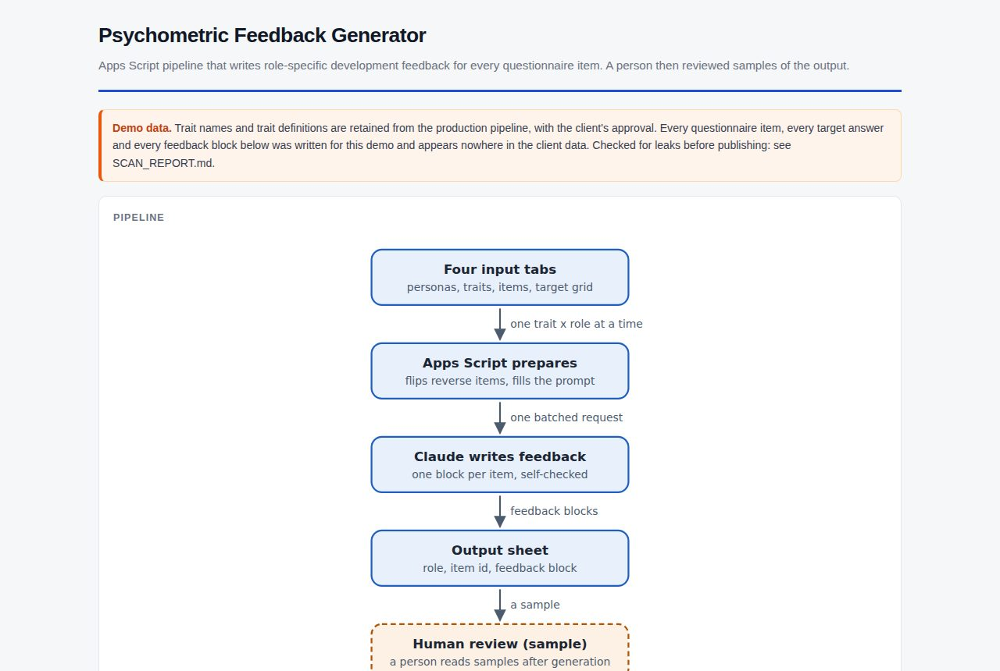

Real client project
Psychometric feedback generator
A Google Sheets script that writes role-specific feedback for every question in a personality questionnaire, for every job role. The questions, targets and feedback shown are all invented.